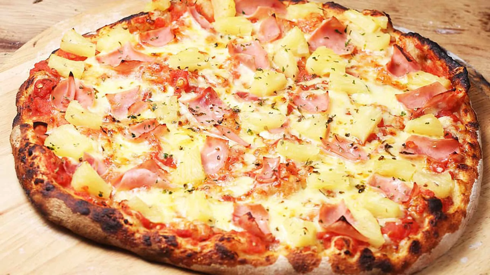

Pizza Hawaiana

La pizza hawaiana es una combinación dulce y salada muy popular. Mezcla jamón, queso mozzarella y trozos de piña sobre una base de salsa de tomate, logrando un contraste de sabores que la hace única. Es ideal para quienes disfrutan de sabores más suaves y frutales.